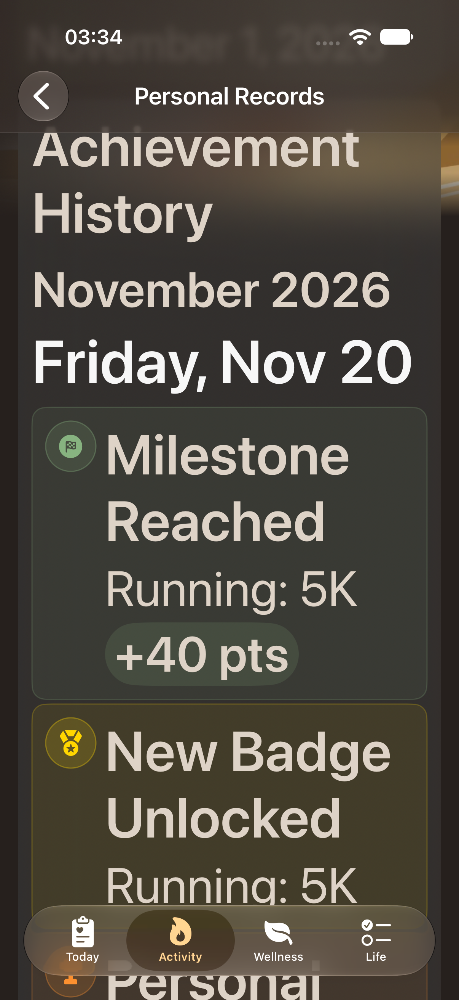
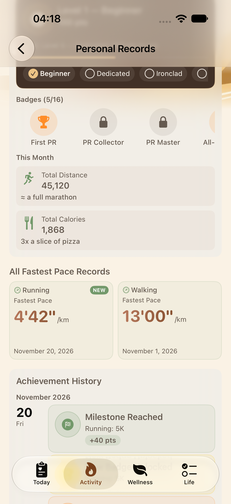
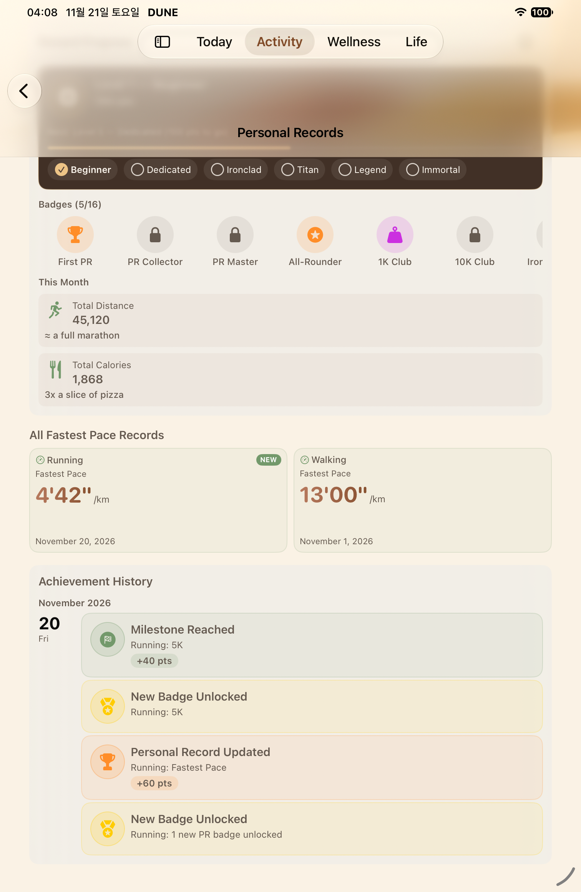
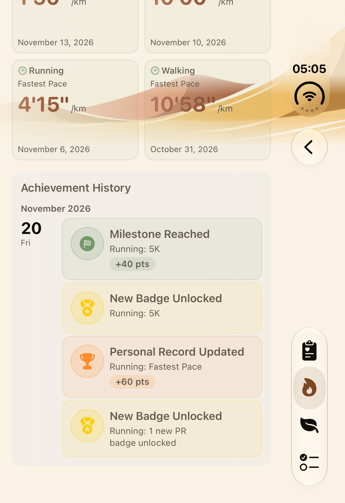
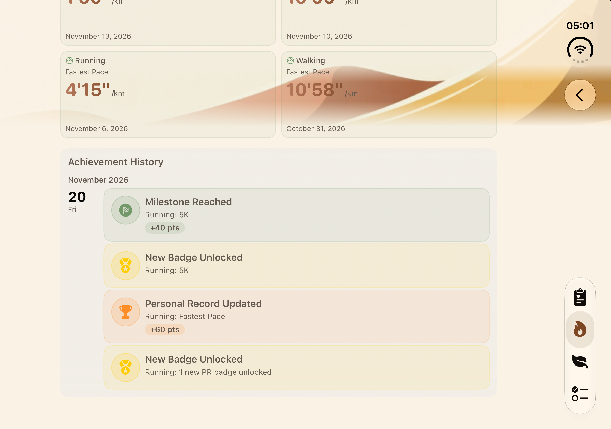

전체 디자인맵
R13 · A10
기능별 원격 소스와 최종 통합본을 파일 단위로 대조했다. 각 이미지를 통과한 개별 UI 테스트에 연결했다. Duo 내부 화면은 지정된 체크포인트에서 활성 LCD-1 프레임버퍼를 직접 캡처했다. 파일별 빌드·크기·관찰 결과는 아래 기록에 있다. source 9a9b3d73296551225a07c50af812f2ff75fbc54b; build 47781c2d49de3f1c1ea54aef44a457ea8bb99b20,676e10da12b4cc957e8cb6eb516fbee14af5035f,0a266b6ad3dedb4b8cb2e990f9e27cb77a54a871.

regular · R13-screen · 1206×2622
기본 글씨와 최대 글씨에서 같은 날의 달성 이력이 하나의 날짜 제목을 공유하고 첫 기록의 제목, 설명 및 40점이 보인다.

regular · A10-achievement-date-group · 1206×2622
기본 글씨와 최대 글씨에서 같은 날의 달성 이력이 하나의 날짜 제목을 공유하고 첫 기록의 제목, 설명 및 40점이 보인다.

ipad · A10-achievement-date-group · 1512×2316
iPad A10 실제 PNG에서 Achievement History의 November 2026 아래 날짜 20/Fri가 왼쪽 레일에 한 번 표시되고, 같은 날짜의 여러 달성 카드가 오른쪽에 세로로 묶여 있다. 카드 제목·상세·포인트가 읽히며 마지막 카드까지 화면 안에 보인다. 다른 날짜/빈 상태/최대 글씨는 이 한 장으로 검증하지 않는다.

duo · A10-achievement-date-group · 1398×2034
접힌 화면에서 20일 날짜가 한 번 표시되고 같은 날 달성한 네 개의 보상 카드가 차례로 보인다.

duo-open · A10-achievement-date-group · 2853×2007
펼친 화면의 20일 날짜 오른쪽에 첫 마일스톤과 배지, 개인 기록 갱신 및 다음 배지가 같은 그룹으로 정렬된다.미검증 기기: none by device. 미검증 화면: none by screen ID. 육안 검토: 원본 화면 검토 완료; 기본 글씨와 최대 글씨에서 같은 날의 달성 이력이 하나의 날짜 제목을 공유하고 첫 기록의 제목, 설명 및 40점이 보인다. iPad A10 실제 PNG에서 Achievement History의 November 2026 아래 날짜 20/Fri가 왼쪽 레일에 한 번 표시되고, 같은 날짜의 여러 달성 카드가 오른쪽에 세로로 묶여 있다. 카드 제목·상세·포인트가 읽히며 마지막 카드까지 화면 안에 보인다. 다른 날짜/빈 상태/최대 글씨는 이 한 장으로 검증하지 않는다. 접힌 화면에서 20일 날짜가 한 번 표시되고 같은 날 달성한 네 개의 보상 카드가 차례로 보인다. 펼친 화면의 20일 날짜 오른쪽에 첫 마일스톤과 배지, 개인 기록 갱신 및 다음 배지가 같은 그룹으로 정렬된다.; 기능별 캡처 검토.
원본 파일명·SHA-256·크기·테스트 출처